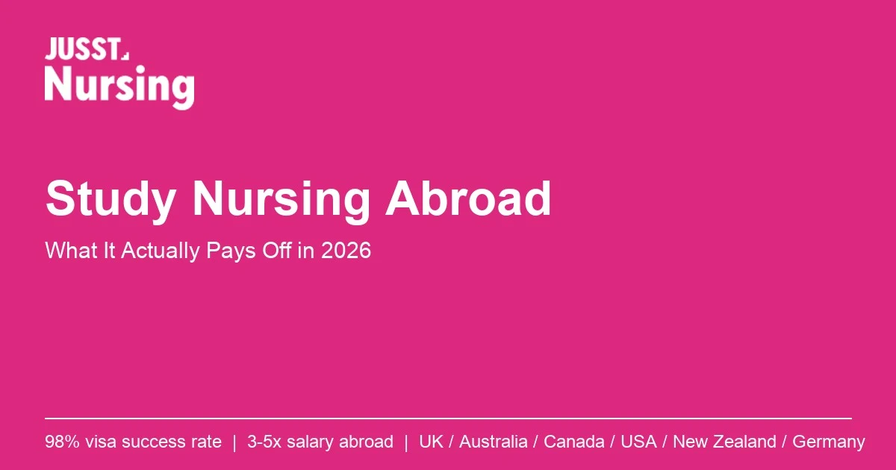

Study Nursing Abroad
Study Nursing Abroad: What It Actually Pays Off in 2026
A data-backed look at what studying nursing abroad changes for Indian nurses: salary, licensing exams like NCLEX and NMC registration, visa success rates, and how to pick a destination in 2026.

A GNM or BSc Nursing degree earns roughly Rs 15,000-25,000 a month in India. The same qualification, registered abroad, opens roles paying three to five times that. That holds true in the UK, Australia, Canada, the US, New Zealand, and Germany. This gap is why "study nursing abroad" is one of the most searched career decisions among Indian nurses. The search results rarely explain what actually changes once you land. They also skip which destinations got harder to enter this past year.
This guide breaks down the real mechanics. It covers what licensing exams like NCLEX-RN and NMC registration involve. It shows which countries reward which nursing background. It explains what a program actually costs after scholarships, where the UK route recently tightened, and where nurses most often lose time or money.
Key Takeaways
- The global nursing shortage sits at 5.8 million as of 2023. It is projected to fall to 4.1 million by 2030. That keeps demand for internationally trained nurses high across the UK, Australia, Canada, the US, and Germany (WHO State of the World's Nursing 2025).
- Licensing exams are the real bottleneck, not admission. In 2025, first-time NCLEX-RN pass rates were 47.3% for internationally educated candidates. US-educated candidates passed at 86.7%. That is a gap of roughly 35 to 40 percentage points (NCSBN, 2025 NCLEX Examination Statistics, retrieved 2026-09-02).
- The UK route tightened sharply. New joiners from India to the NMC register fell 54.4%, from 9,249 to 4,215, in the year to March 2026. Visa rule changes drove the drop, not falling demand for nurses (NMC data reports).
- Canada is currently the fastest PR route. Its Healthcare and Social Services Express Entry draws issued invitations at CRS scores as low as 467 between February and June 2026, well below general Express Entry cutoffs (IRCC, Express Entry rounds of invitations; CIC News, June 2026, retrieved 2026-09-02).
- Structured guidance closes the gap between admission and actually practicing abroad. Jusst Nursing has supported nurses to a 98% visa success rate across UK, Australia, Canada, USA, New Zealand, and Germany applications (see the destination breakdown below).
Most guides rank destinations by salary alone. That framing misses the variable that actually predicts a first-attempt pass: fit between the destination's assessment format and the nurse's own test-taking track record. A single high-stakes exam and document-and-English verification reward different strengths. Neither rewards clinical knowledge alone.
In this article:
- Why Nursing Abroad Pays Off Beyond Salary
- The Real Bottleneck: Licensing Exams, Not Admission
- Why the UK Route Got Harder in 2025-2026
- Choosing a Destination: Matching Your Profile to the System
- What the Preparation Timeline Actually Looks Like
- Frequently Asked Questions
- Conclusion
Why Nursing Abroad Pays Off Beyond Salary
The salary jump is the headline, but it is not the only structural change. Registering with a foreign nursing body puts a nurse's credentials on a global track instead of a local one.
Career mobility changes first. NMC registration in the UK or clearing NCLEX-RN in the US are internationally recognized licensing steps. Once cleared, that license travels with the nurse, unlike a state-specific Indian registration.
Permanent residency pathways move faster too. Canada, Australia, and New Zealand actively fast-track registered nurses toward permanent residency because nursing appears on their skilled-occupation shortage lists. Canada's Healthcare and Social Services category draws issued invitations at CRS cutoffs between 467 and 475 across four rounds between February and June 2026, well below the general Express Entry cutoff (IRCC).
Real funding sits underused. Scholarships up to GBP 15,000 in the UK and NZD 20,000 in New Zealand exist specifically for nursing students. Because most applicants assume study-abroad scholarships are only for engineering or business degrees, nursing-specific funding pools stay underused.
Global demand is not closing soon either. The worldwide nursing shortage was 5.8 million in 2023, down from 6.2 million in 2020. It is projected to reach 4.1 million by 2030. Roughly 70% of the remaining gap sits in Africa and the Eastern Mediterranean region (WHO, 2025). That leaves sustained demand in the UK, Australia, Canada, the US, and Germany, the destinations most Indian nurses actually target.
The Real Bottleneck: Licensing Exams, Not Admission
Most students planning to study nursing abroad prepare heavily for admission and underprepare for licensure. That is backwards. Admission confirms academic eligibility. Licensure confirms you can practice.
NCLEX-RN is the standardized computer-adaptive exam every nurse must pass to practice as a registered nurse in the United States. The National Council of State Boards of Nursing (NCSBN) administers it. NMC registration is the equivalent requirement in the UK: joining the Nursing and Midwifery Council's register, the legal precondition to practice nursing there.
The clearest evidence of the licensure gap is NCLEX-RN performance. Internationally educated first-time candidates passed at 47.3% in 2025. US-educated first-time candidates passed at 86.7% in the same year. That is a gap of roughly 35 to 40 percentage points (NCSBN, 2025 NCLEX Examination Statistics, retrieved 2026-09-02).
The gap is not a knowledge gap. The Next Generation NCLEX tests US-specific clinical judgment frameworks. It covers prioritization by the ABCs and Maslow's hierarchy, RN-versus-LPN scope-of-practice rules, delegation norms, and US informed-consent and patient-rights standards. A nurse trained deeply in Indian clinical practice can still miss these test-specific frameworks without targeted preparation.
The UK's NMC registration process runs differently. It verifies your existing qualification and clinical hours, then requires an OET or IELTS score plus, in most cases, a Test of Competence (CBT and OSCE). Canada and Australia route nurses through national regulator assessments instead: NNAS in Canada, NMBA-recognized pathways in Australia. Both emphasize document verification and standardized English testing over a single high-stakes exam.
The practical takeaway: budget serious preparation time for the destination's specific licensing pathway, not just its university admission requirements.
Why the UK Route Got Harder in 2025-2026
Any current guide to studying nursing abroad has to address this directly. The UK, long the most popular first destination for Indian nurses, tightened considerably in the past year. New joiners from India to the NMC register fell 54.4%. The number dropped from 9,249 in the prior year to 4,215 in the year to March 2026 (NMC data report, 2026). The decline traces mainly to UK visa rule changes and shifting recruitment priorities, not to a drop in the UK's underlying need for nurses.
This does not mean the UK route is closed. It means the route now rewards careful preparation and earlier application. It also makes destination diversification a more realistic 2026 strategy than defaulting to the UK. Nurses who compare UK options against Canada tend to end up with more options. The same holds for comparing against Australia. Canada's healthcare-category Express Entry draws have issued invitations at CRS scores well below general draws throughout 2026 (see the destination table below).
Choosing a Destination: Matching Your Profile to the System
Not every country rewards the same strengths. Choosing based on salary alone is the most common mistake nurses make. Check which system fits your background, and which system just changed its rules, first.
| Country | Courses | Intakes | Scholarships | Avg. Annual Cost | Key Hook |
|---|---|---|---|---|---|
| UK | BSc/MSc Nursing | Jan, Sep | Up to GBP 15,000 | GBP 22,000-35,000 | Direct NMC registration, though 2025-2026 saw a 54% drop in Indian joiners after visa changes |
| New Zealand | BSc/Grad Diploma | Feb, Jul | Up to NZD 20,000 | NZD 27,000-36,000 | Welcoming healthcare community, PR pathway |
| Canada | BSc/PG Nursing | Jan, May, Sep | Up to CAD 25,000 | CAD 25,000-38,000 | Healthcare category Express Entry draws at CRS 467-475, Feb-Jun 2026 |
| Australia | BSc/MSc Nursing | Feb, Jul, Nov | Up to AUD 30,000 | AUD 28,000-40,000 | Standardized assessment pathway, strong PR routes |
| USA | BSN/MSN | Jan, Aug | Up to USD 40,000 | USD 35,000-55,000 | Highest salaries, green card pathway, toughest first-time NCLEX-RN pass rate |
| Germany | BSc/Health Care Program | Mar, Sep | Up to EUR 10,000 | EUR 35,000-55,000 | Free or low tuition, work while you study |
For example, consider two nurses with the same BSc Nursing degree and similar grades. One is strong at continuous coursework assessment but freezes on single-sitting, high-stakes exams. The other performs best under exam pressure and struggles with slow, document-heavy processes. The first nurse is a stronger fit for Canada or Australia's verification-based pathway. The second is better positioned for the US's single NCLEX-RN attempt. Matching this pattern before applying, not after a failed exam, is what separates a fast pathway from a repeated one.
A few patterns worth acting on:
- Strong English scores but a weaker record on high-stakes, single-attempt exams: Canada or Australia's document-and-standardized-testing pathway tends to suit you better than the US's single-shot NCLEX model.
- Salary ceiling matters most and you can commit to intensive NCLEX preparation: the US offers the highest pay and a green card pathway, but the toughest first-time pass rate for internationally trained candidates.
- Minimizing tuition matters as much as the destination: Germany's low-cost public programs, plus work-while-you-study rules, change the total cost calculation more than any single scholarship on this list.
- If the UK was your default choice, treat 2026 as the year to actively compare it against Canada's healthcare Express Entry draws before committing.
What the Preparation Timeline Actually Looks Like
A structured pathway typically runs through six stages. Skipping or rushing any one of them is where most delays happen.
- Free consultation and profile assessment: matching your GNM, BSc Nursing, or working RN background against destination requirements before committing to a country.
- Admission process: university and course selection, document preparation, and application submission.
- Visa filing: documentation specific to the destination's student or skilled-worker visa category.
- Test preparation: IELTS, PTE, TOEFL, or OET, plus destination-specific licensing prep (NCLEX-RN, NMC Test of Competence, or equivalent).
- Pre-departure guidance: practical preparation for arrival, housing, and first clinical placement.
- Onshore services: settlement support, licensing follow-through, and employment support once you have landed.
Nurses who treat these as one connected sequence, rather than five separate vendors handling counselling, visa filing, test prep, and settlement independently, consistently move faster and lose fewer documents in translation between providers. Jusst Nursing's about page covers how this end-to-end model differs from a single-service consultancy.
Frequently Asked Questions
Is nursing abroad realistic for a GNM diploma holder, or only BSc Nursing graduates?
Both qualify for most destinations, though the pathway differs. BSc Nursing graduates generally have a more direct route into UK NMC registration and US BSN-equivalent programs. GNM diploma holders often need a bridging course or additional coursework first, particularly for the US and UK. Canada and Australia have more flexible recognition routes for GNM-qualified nurses with clinical experience.
How long does the full process take from decision to working abroad?
Most nurses move from initial consultation to landing abroad in 8 to 14 months, depending on destination and intake cycle. The licensing exam timeline is usually the largest variable. NCLEX-RN preparation for the US typically adds 3 to 6 months beyond university admission and visa processing.
Which country has the easiest nursing licensing process for Indian nurses in 2026?
"Easiest" depends on your strengths, not the country, and it changed in the past year. Canada and Australia rely more on document verification and standardized English scores. That suits nurses stronger in consistent test performance over time, and Canada's 2026 healthcare Express Entry draws are currently the most accessible PR route. The UK and US require a single high-stakes clinical exam, the NMC Test of Competence or NCLEX-RN. The UK also recently tightened visa rules, cutting Indian nurse registrations by more than half.
Do nursing scholarships abroad actually cover a meaningful part of the cost?
Yes, when applied for early. UK nursing scholarships reach up to GBP 15,000 against an average annual cost of GBP 22,000-35,000, covering roughly a third to half of one year's cost. New Zealand's NZD 20,000 nursing scholarships work similarly. Most applicants miss these because they assume study-abroad scholarships apply only to business or engineering degrees, not nursing-specific programs.
Conclusion
Studying nursing abroad is a structured career decision, not a leap of faith. Treat licensing exams as seriously as admission. Match your background to a destination's actual assessment style, including its most recent rule changes, rather than just its salary ceiling.
The global nursing shortage, still 5.8 million as of 2023, keeps genuine demand open across the UK, Australia, Canada, the US, New Zealand, and Germany. That holds even as the UK route has tightened and Canada's PR pathway has opened wider. The nurses who move fastest prepare for NCLEX-RN, NMC registration, or the equivalent from day one, and use the scholarships already built for this exact transition.
Explore Jusst Nursing's destination pages for the UK, Australia, Canada, USA, New Zealand, and Germany to see which pathway matches your GNM, BSc Nursing, or working RN background.
This guide was researched and reviewed by Jusst Nursing's counselling team, which works directly with nurses on UK, Australia, Canada, USA, New Zealand, and Germany applications. Every statistic above links to its original source, with a retrieval date.
Sources:
- WHO: State of the World's Nursing 2025
- WHO: Nursing workforce grows, but inequities threaten global health goals
- WHO: Nursing and midwifery fact sheet
- NCSBN: 2025 NCLEX Examination Statistics
- NMC: The NMC Register 1 April 2025 - 31 March 2026
- NMC: Nursing and midwifery register grows but pace of international nurse recruitment slows
- IRCC: Express Entry rounds of invitations
- CIC News: IRCC issues invitations to healthcare and social services workers in Express Entry draw